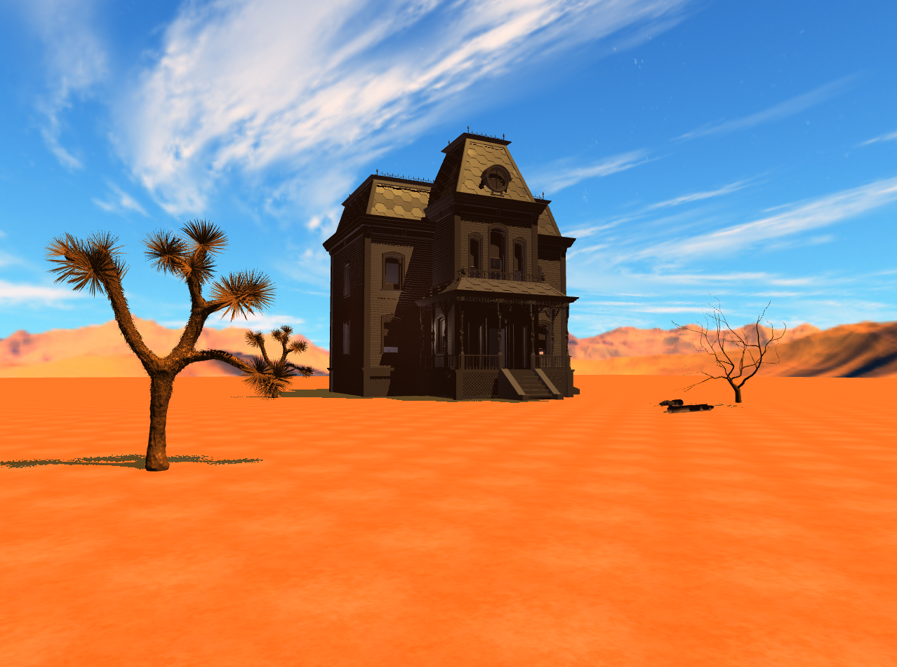
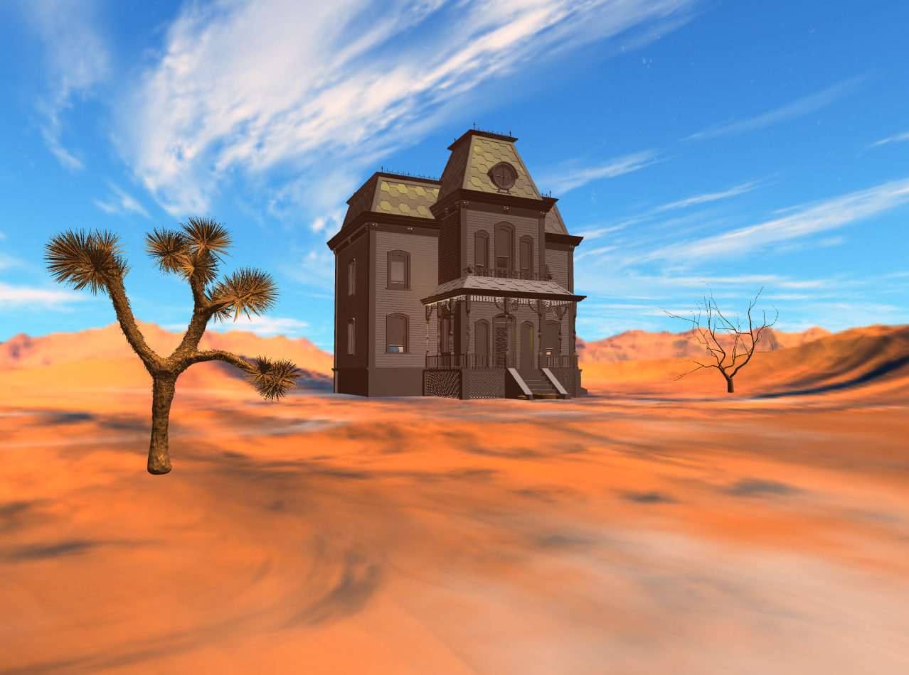
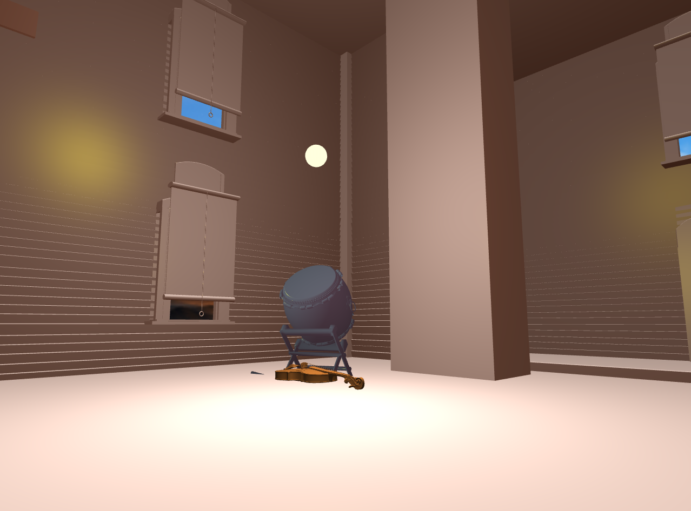
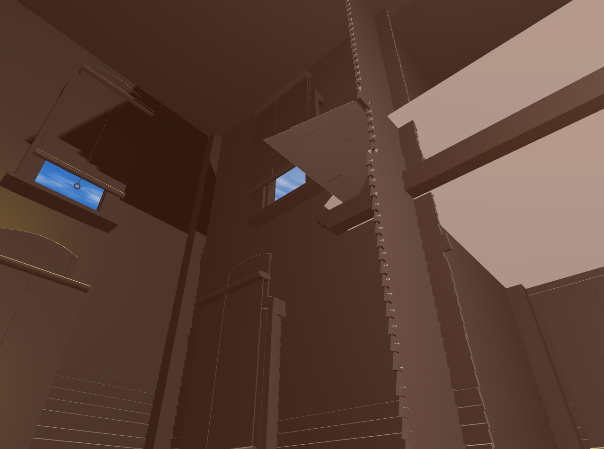
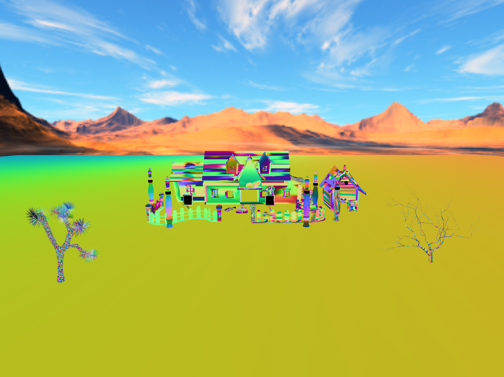
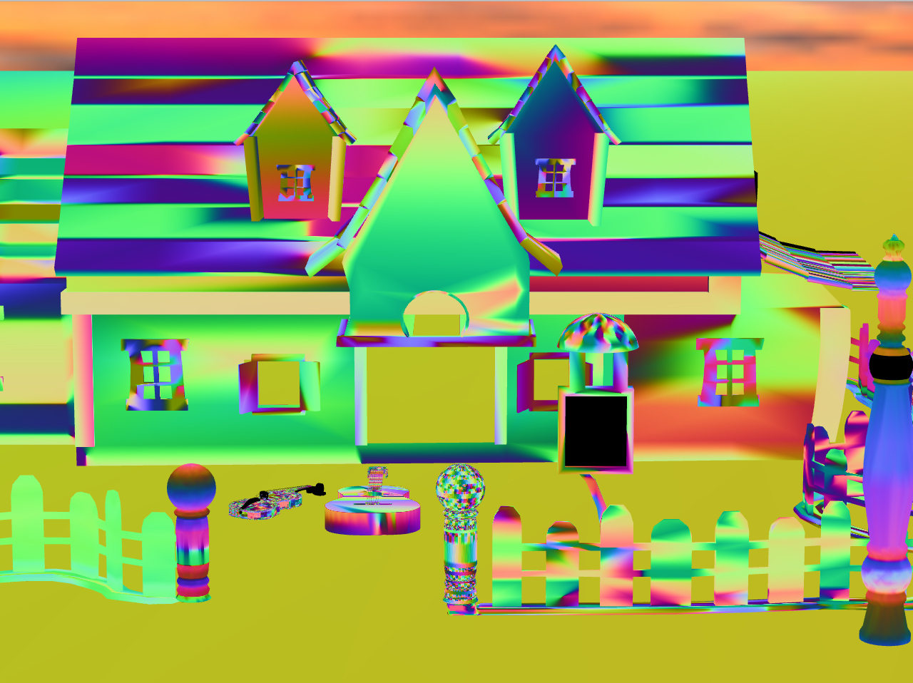
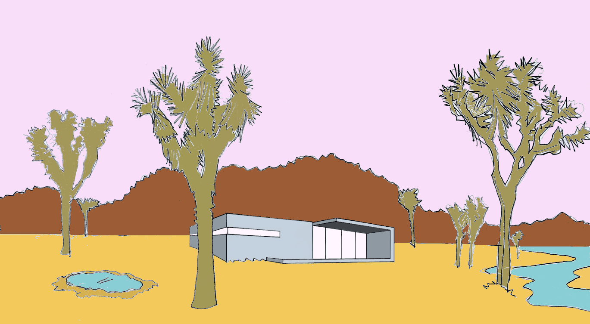
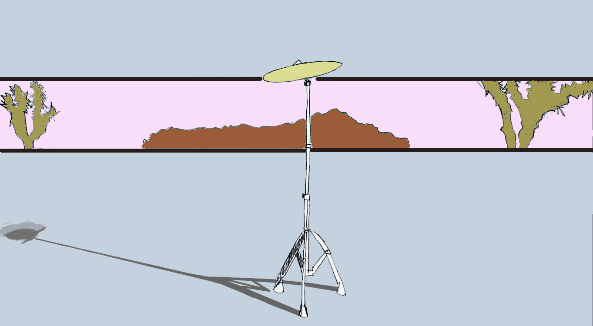

CSE 167 Final Project
Blog Post #4
Description of Work Completed: I finished the shadow mapping and added a textured floor.
Final render:

Blog Post #3
Updates to Original Plan: I decided not to program collision detection with bounding spheres or boxes.
Description of Work Completed: I completed the following during the last week:
(i) Added background environment sound
(ii) Added shadow mapping (still some kinks to iron out)
(iii) Added Phong illumination with both point and directional lights
(iv) Imported new 3D models of musical instruments and a Victorian house
Desert scene:

Inside the house:

Shadow cast on inside of house:

Blog Post #2
Updates to Original Plan: In order to focus more attention on the game play aspects of "Desert Sounds", I made the
following modifications to my original plan:
(i) import 3D models of trees rather than procedurally generate them using L-systems
(ii) add first-person camera control with player movements
Description of Work Completed: I completed the following during the last week:
(i) Created desert skybox
(ii) Imported 3D models of trees, house, and musical instruments
Desert scene:

Close-up of the house (notice the violin and the guitar in the front yard):

Blog Post #1
Title of project: "Desert Sounds"
Name: Chad McKell
Description: "Desert Sounds" is a desert environment with a world of sounds to discover—a babbling brook, a pond with
crickets, and a concrete house with musical instruments. When the application opens, the player will be placed about 100 meters away from the house.
The player may then choose to walk to the brook, the pond, or the house. Musical instruments will be placed inside the house as well
as on the porch outside in order to demonstrate that the acoustics vary by location.
Technical Features:
1. Easy:
(i) Collision detection with bounding spheres or boxes
(ii) Sound effects
2. Medium:
(i) Procedurally generated plants with L-systems
(ii) Shadow mapping
Creative efforts: First, I will collect a number of audio files to match various scenes in my environment. Then, I
will use a convolution reverberation algorithm to simulate realistic room acoustics in the concrete house.
Out in the desert:

Inside the concrete house, we find musical instruments (e.g. a cymbal):
